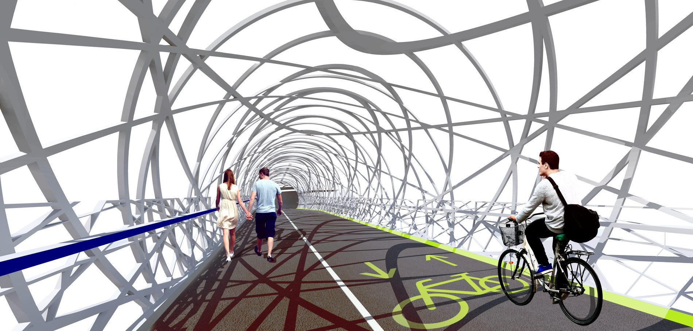
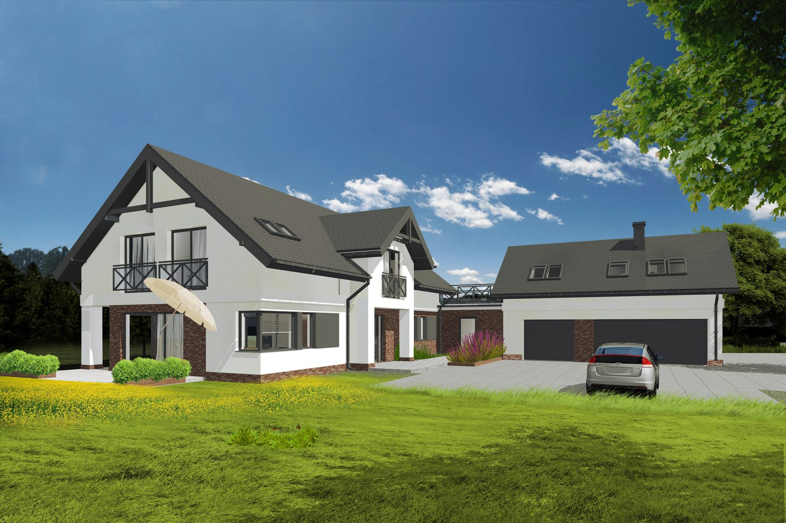
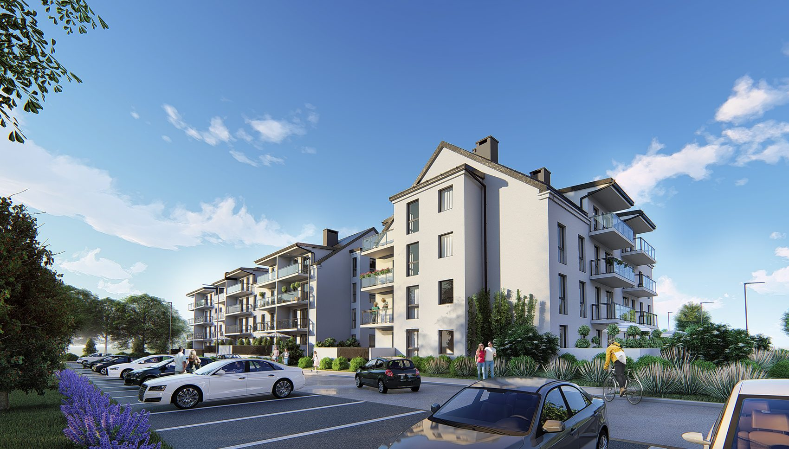
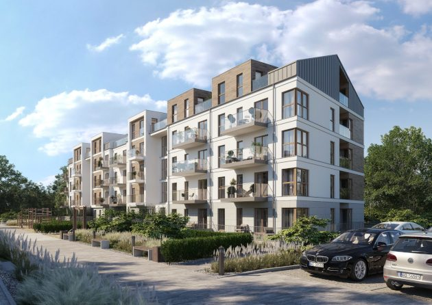
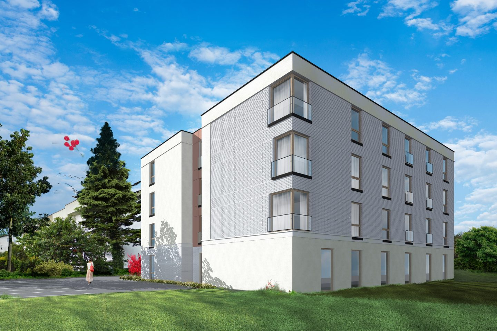
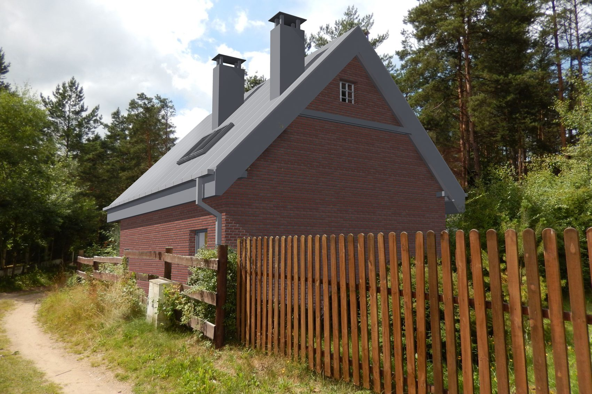

Spis projektów
Co zaprojektowaliśmy
Pięć grup, 27 pozycji. Wizualizacje i plansze z naszych opracowań.
10 projektów
Architektura mieszkaniowa
Budynki wielorodzinne, mieszkalno-usługowe i jednorodzinne. Od pojedynczego domu po całe osiedle i kwartał zabudowy w centrum miasta.









7 projektów
Budynki użyteczności publicznej
Obiekty, z których korzystają mieszkańcy: urząd, przedszkole, pensjonat, sklep, budynek fundacji.


3 projekty
Budynki przemysłowe
Hale, budynki biurowo-magazynowe i biurowce dla firm produkcyjnych i handlowych.


2 projekty
Przestrzenie publiczne
Parki, place i połączenia piesze. Projekt zieleni, nawierzchni i małej architektury.

5 projektów
Projekty wnętrz
Wnętrza budynków, które wcześniej sami projektowaliśmy, oraz aranżacje w obiektach istniejących.


Twój projekt
Następny budynek może być Twój
Powiedz, gdzie jest działka i co ma na niej stanąć.
Zadzwoń 58 685 33 95